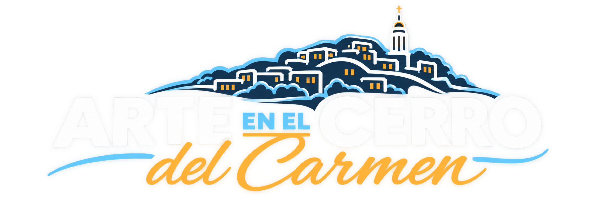
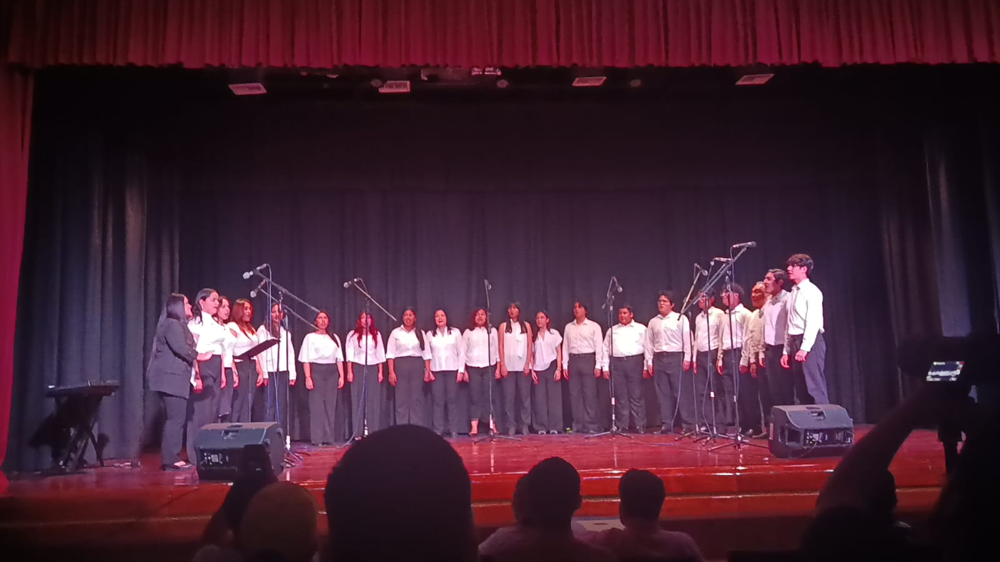
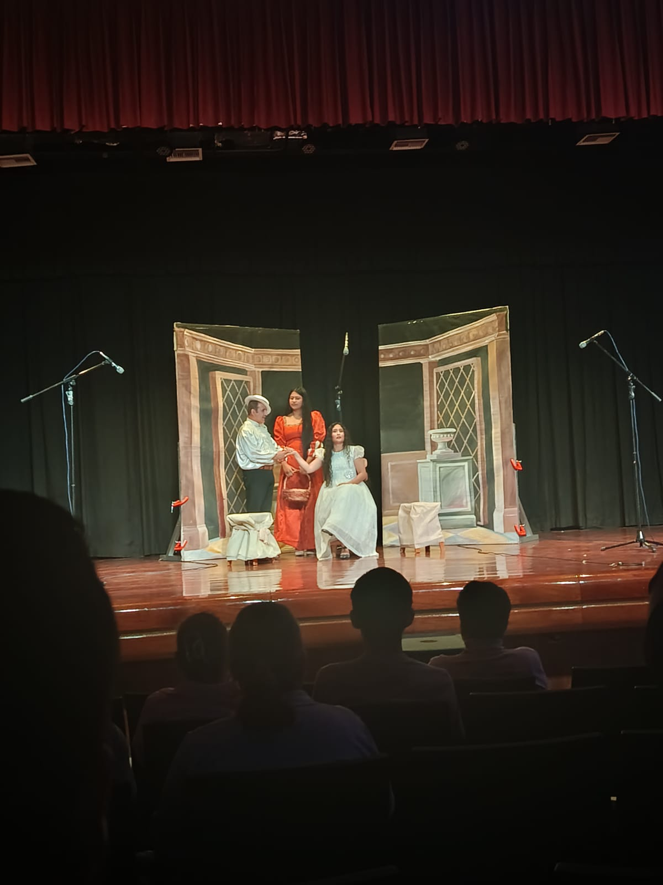
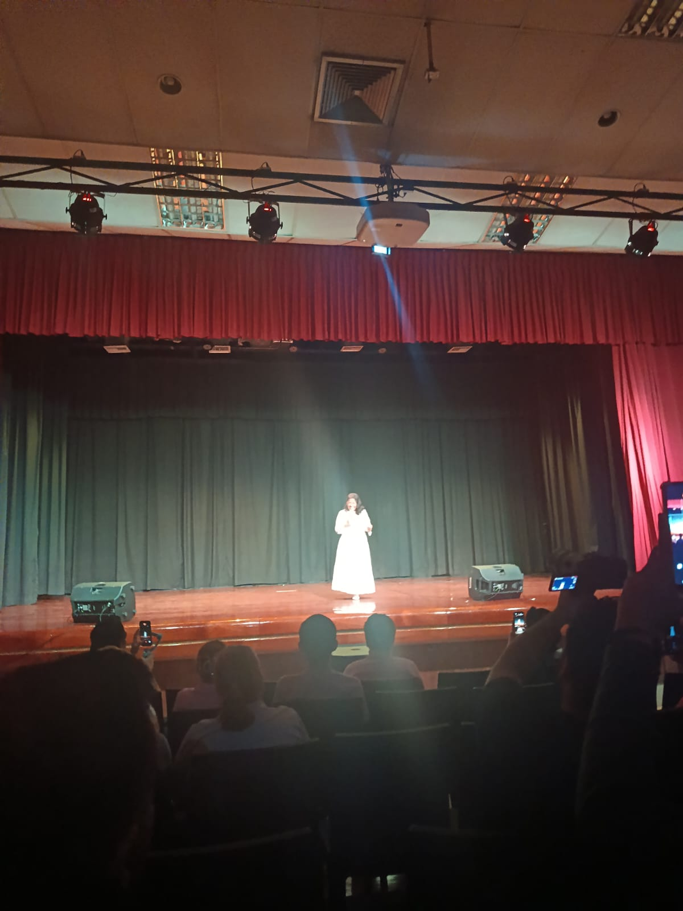

Cultura para todos
La música, la danza y el teatro acercan distintas expresiones artísticas a los espacios comunitarios.

Un espacio para disfrutar de las expresiones artísticas
y conectar con la comunidad.
El arte como punto de encuentro para transformar espacios y fortalecer la comunidad.
Arte en el Cerro es una iniciativa impulsada por la ESPOL en colaboración con Segura EP y los habitantes del Cerro del Carmen, en Guayaquil. Su objetivo es acercar las expresiones artísticas a la comunidad, fomentar la convivencia y promover la apropiación de los espacios públicos a través de la cultura.
Mediante presentaciones artísticas y actividades culturales, el proyecto busca crear oportunidades de encuentro entre la comunidad universitaria y los habitantes del sector.
La música, la danza y el teatro acercan distintas expresiones artísticas a los espacios comunitarios.
El proyecto promueve el encuentro ciudadano, la participación y el uso positivo de los espacios públicos.

Las agrupaciones de ESPOL Cultural comparten su talento y contribuyen a fortalecer los vínculos entre la universidad y la ciudad.
Información basada en la publicación oficial de la ESPOL. Conoce más sobre la iniciativa
Arte en el Cerro reunió talento artístico de la ESPOL y una participación especial en una jornada dedicada a la cultura y la comunidad.
El coro institucional de la ESPOL formó parte de esta edición, compartiendo su talento musical con la comunidad.
Las artes escénicas estuvieron representadas por el Grupo de Teatro ESPOL, acercando la expresión teatral al público.
Elena Erazo participó como invitada especial, formando parte de esta celebración cultural y artística.
Revive los momentos artísticos de Arte en el Cerro, realizado el 2 de octubre de 2026.

Expresión musical y talento coral.

Creatividad y expresión escénica.

Invitada especial del evento.
Todo lo que necesitas saber para disfrutar de Arte en el Cerro.
Arte en el cerro se realizó el . La convocatoria fue anunciada para las .
El evento se realizó en el Aula Magna de la ESPOL, ubicada en el Campus Las Peñas, en Guayaquil, Ecuador.
Arte en el cerro fue un evento cultural de acceso totalmente gratuito, abierto a la comunidad para disfrutar de las expresiones artísticas.
El Aula Magna de la ESPOL, ubicada en el Campus Las Peñas de Guayaquil, fue el escenario de Arte en el Cerro el 2 de octubre de 2026.